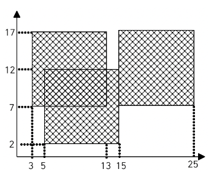
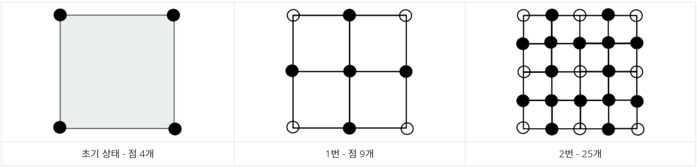

-
6단계 (심화 1)
-
01. 너의 평점은 (문제 번호 : 25206)
- 문제 풀이 보기 →
-
- 문제
인하대학교 컴퓨터공학과를 졸업하기 위해서는, 전공평점이 3.3 이상이거나 졸업고사를 통과해야 한다. 그런데 아뿔싸, 치훈이는 깜빡하고 졸업고사를 응시하지 않았다는 사실을 깨달았다! 치훈이의 전공평점을 계산해주는 프로그램을 작성해보자. 전공평점은 전공과목별 (학점 × 과목평점)의 합을 학점의 총합으로 나눈 값이다. 인하대학교 컴퓨터공학과의 등급에 따른 과목평점은 다음 표와 같다.
P/F 과목의 경우 등급이 P또는 F로 표시되는데, 등급이 P인 과목은 계산에서 제외해야 한다. 과연 치훈이는 무사히 졸업할 수 있을까?A+ 4.5 A0 4.0 B+ 3.5 B0 3.0 C+ 2.5 C0 2.0 D+ 1.5 D0 1.0 F 0.0 - 입력
20줄에 걸쳐 치훈이가 수강한 전공과목의 과목명, 학점, 등급이 공백으로 구분되어 주어진다.- 출력
치훈이의 전공평점을 출력한다. 정답과의 절대오차 또는 상대오차가 0.0001 이하이면 정답으로 인정한다.- 제한
- 01. 1 ≤ 과목명의 길이 ≤ 50
- 02. 과목명은 알파벳 대소문자 또는 숫자로만 이루어져 있으며, 띄어쓰기 없이 주어진다. 입력으로 주어지는 모든 과목명은 서로 다르다.
- 03. 학점은 1.0,2.0,3.0,4.0중 하나이다.
- 04. 등급은 A+,A0,B+,B0,C+,C0,D+,D0,F,P중 하나이다.
- 05. 적어도 한 과목은 등급이 P가 아님이 보장된다.
-
-
7단계 (2차원 배열)
-
01. 색종이 (문제 번호 : 2563)
- 문제 풀이 보기 →
-
- 문제
가로, 세로의 크기가 각각 100인 정사각형 모양의 흰색 도화지가 있다. 이 도화지 위에 가로, 세로의 크기가 각각 10인 정사각형 모양의 검은색 색종이를 색종이의 변과 도화지의 변이 평행하도록 붙인다. 이러한 방식으로 색종이를 한 장 또는 여러 장 붙인 후 색종이가 붙은 검은 영역의 넓이를 구하는 프로그램을 작성하시오.  예를 들어 흰색 도화지 위에 세 장의 검은색 색종이를 그림과 같은 모양으로 붙였다면 검은색 영역의 넓이는 260이 된다.- 입력
첫째 줄에 색종이의 수가 주어진다. 이어 둘째 줄부터 한 줄에 하나씩 색종이를 붙인 위치가 주어진다. 색종이를 붙인 위치는 두 개의 자연수로 주어지는데 첫 번째 자연수는 색종이의 왼쪽 변과 도화지의 왼쪽 변 사이의 거리이고, 두 번째 자연수는 색종이의 아래쪽 변과 도화지의 아래쪽 변 사이의 거리이다. 색종이의 수는 100 이하이며, 색종이가 도화지 밖으로 나가는 경우는 없다- 출력
첫째 줄에 색종이가 붙은 검은 영역의 넓이를 출력한다.
-
-
8단계 (일반 수학 1)
-
01. 세탁소 사장 동혁 (문제 번호 : 2720)
- 문제 풀이 보기 →
-
- 문제
미국으로 유학간 동혁이는 세탁소를 운영하고 있다. 동혁이는 최근에 아르바이트로 고등학생 리암을 채용했다. 동혁이는 리암에게 실망했다. 리암은 거스름돈을 주는 것을 자꾸 실수한다. 심지어 $0.5달러를 줘야하는 경우에 거스름돈으로 $5달러를 주는것이다! 어쩔수 없이 뛰어난 코딩 실력을 발휘해 리암을 도와주는 프로그램을 작성하려고 하지만, 디아블로를 하느라 코딩할 시간이 없어서 이 문제를 읽고 있는 여러분이 대신 해주어야 한다. 거스름돈의 액수가 주어지면 리암이 줘야할 쿼터(Quarter, $0.25)의 개수, 다임(Dime, $0.10)의 개수, 니켈(Nickel, $0.05)의 개수, 페니(Penny, $0.01)의 개수를 구하는 프로그램을 작성하시오. 거스름돈은 항상 $5.00 이하이고, 손님이 받는 동전의 개수를 최소로 하려고 한다. 예를 들어, $1.24를 거슬러 주어야 한다면, 손님은 4쿼터, 2다임, 0니켈, 4페니를 받게 된다.- 입력
첫째 줄에 테스트 케이스의 개수 T가 주어진다. 각 테스트 케이스는 거스름돈 C를 나타내는 정수 하나로 이루어져 있다. C의 단위는 센트이다. (1달러 = 100센트) (1<=C<=500)- 출력
각 테스트케이스에 대해 필요한 쿼터의 개수, 다임의 개수, 니켈의 개수, 페니의 개수를 공백으로 구분하여 출력한다.
-
02. 중앙 이동 알고리즘 (문제 번호 : 2903)
- 문제 풀이 보기 →
-
- 문제
상근이는 친구들과 함께 SF영화를 찍으려고 한다. 이 영화는 외계 지형이 필요하다. 실제로 우주선을 타고 외계 행성에 가서 촬영을 할 수 없기 때문에, 컴퓨터 그래픽으로 CG처리를 하려고 한다. 외계 지형은 중앙 이동 알고리즘을 이용해서 만들려고 한다. 알고리즘을 시작하면서 상근이는 정사각형을 이루는 점 4개를 고른다. 그 후에는 다음과 같은 과정을 거쳐서 지형을 만든다. 1.정사각형의 각 변의 중앙에 점을 하나 추가한다. 2.정사각형의 중심에 점을 하나 추가한다. 초기 상태에서 위와 같은 과정을 한 번 거치면 총 4개의 정사각형이 새로 생긴다. 이와 같은 과정을 상근이가 만족할 때 까지 계속한다. 아래 그림은 과정을 총 2번 거쳤을 때까지의 모습이다.  상근이는 어떤 점은 한 개 보다 많은 정사각형에 포함될 수 있다는 사실을 알았다. 메모리 소모량을 줄이기 위해서 중복하는 점을 한 번만 저장하려고 한다. 과정을 N번 거친 후 점 몇 개를 저장해야 하는지 구하는 프로그램을 작성하시오.- 입력
첫째 줄에 N이 주어진다. (1 ≤ N ≤ 15)- 출력
첫째 줄에 과정을 N번 거친 후 점의 수를 출력한다.
-
02. 벌집 (문제 번호 : 2292)
- 문제 풀이 보기 →
-
- 문제
 위의 그림과 같이 육각형으로 이루어진 벌집이 있다. 그림에서 보는 바와 같이
중앙의 방 1부터 시작해서 이웃하는 방에 돌아가면서 1씩 증가하는 번호를 주소로
매길 수 있다. 숫자 N이 주어졌을 때, 벌집의 중앙 1에서 N번 방까지 최소 개수의
방을 지나서 갈 때 몇 개의 방을 지나가는지(시작과 끝을 포함하여)를 계산하는
프로그램을 작성하시오. 예를 들면, 13까지는 3개, 58까지는 5개를 지난다.
위의 그림과 같이 육각형으로 이루어진 벌집이 있다. 그림에서 보는 바와 같이
중앙의 방 1부터 시작해서 이웃하는 방에 돌아가면서 1씩 증가하는 번호를 주소로
매길 수 있다. 숫자 N이 주어졌을 때, 벌집의 중앙 1에서 N번 방까지 최소 개수의
방을 지나서 갈 때 몇 개의 방을 지나가는지(시작과 끝을 포함하여)를 계산하는
프로그램을 작성하시오. 예를 들면, 13까지는 3개, 58까지는 5개를 지난다.
- 입력
첫째 줄에 N(1 ≤ N ≤ 1,000,000,000)이 주어진다.- 출력
입력으로 주어진 방까지 최소 개수의 방을 지나서 갈 때 몇 개의 방을 지나는지 출력한다.
-